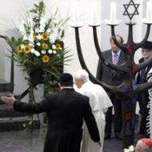

08/08/2007 Le croiriez-vous? Une agence de presse catholique bien connue - Fides, de Rome - vient de publier un lourd pensum à prétention historique et théologique, sous le titre "La prière pour les Juifs: « Une tentative totalement dans les mains de Dieu »". Oeuvre de deux théologiens italiens, ce galimatias ose ce que n’a pas fait le pape, à savoir: justifier la prière pour la conversion des Juifs par un argument ad hominem. En résumé: vous, Juifs, maudissez les chrétiens depuis près de deux millénaires, dans la 12ème bénédiction du Shmone esreh (Birkat haminim), alors, ne venez pas vous plaindre de ce que nous prions, non pour vous maudire mais pour que Dieu illumine votre regard obscurci par l’incroyance et que vous reconnaissiez Jésus-Christ comme votre Seigneur. Ci-après, le texte et mes commentaires. (Menahem Macina). 29/07/07 Remarque liminaire: Ma première réaction à la lecture du texte qui suit a été de ne pas faire de publicité à un pamphlet, aussi ignare que malintentionné. Mais le fait qu’il ait été repris, de manière tapageuse par un site catholique extrêmement fidéiste et apologète inconditionnel de tout ce que l’Eglise romaine promulgue ou énonce, et que ce site bénéficie d’un positionnement Google extrêmement efficace, assurant ainsi une très grande diffusion à tout ce qu’il met en ligne, m’a décidé à dévoiler au grand jour les méfaits de ce document. On trouvera ci-après: 1. Le texte dénoncé, assorti de mes remarques et commentaires. 2. Les résultats de la première page de résultats dans Google News, à la date du 28 juillet, lorsqu’on entre des termes de recherche tels que: "Motu Proprio - Juifs", ou "conversion juifs", ou "Prière pour les Juifs", qui renvoie au site Eucharistie Sacrement de la Miséricorde (ci-après E.S.M.), qui met en ligne l’article ci-après. On notera qu’aujourd’hui encore (31 juillet), on retrouve ce même site en tête des résultats des requêtes ci- dessus. C’est dire l’extrême efficacité médiatique potentielle d’un tel brûlot. (Menahem Macina). Il importe de garder en mémoire que le texte reproduit ci-après est celui qui figure en ligne sur le site de l’agence Fides, sous le titre "La preghiera per gli Ebrei: ’un tentativo completamente nelle mani di Dio’” par les prêtres Nicola Bux et Salvatore Vitiello, et en français, sur le même site : La prière pour les Juifs: « Une tentative totalement dans les mains de Dieu ». 1. L’article, reproduit textuellement, dans sa présentation d’origine et ses enrichissements typographiques propres, tel qu’il figure sur le site E.S.M.

VATICAN, le 28 juillet 2007 - (E.S.M.) - Plusieurs cercles juifs et des organes de presse ont réagi vivement à l’occasion de la promulgation du "Motu Proprio Summorum Pontificum" de Benoît XVI sur la Messe ancienne, en appréhendant la réintroduction de la prière pour les Juifs
La prière pour les Juifs, affirme Benoît XVI, exprime la conviction que la rencontre et le dialogue est une « tentative qui est entièrement dans les mains de Dieu » Plusieurs cercles juifs et des organes de presse ont réagi vivement à l’occasion de la promulgation du "Motu Proprio Summorum Pontificum" de Benoît XVI sur la Messe ancienne, en appréhendant la réintroduction de la prière pour les Juifs, celle dont le Pape Jean XXIII avait enlevé l’adjectif « perfidis ». Certainement, peu de gens savent que les Oraisons solennelles du Vendredi Saint ont une correspondance dans la « birkat ha-minim » (bénédiction contre les hérétiques) de la liturgie juive, qui est la suivante: « Qu’il n’y ait pas d’espérance pour les apostats; déracine rapidement de nos jours le royaume de l’orgueil; et périssent en un instant les nazaréniens (ndlr: les judéo-chrétiens - Nazarénisme) et les hérétiques: qu’ils soient effacés du livre des vivants, et qu’ils ne soient pas inscrits avec les justes. Béni sois-tu Yahvé qui plie les orgueilleux ».
C’est ce que récite la XII° bénédiction de la liturgie de la synagogue dans la forme primitive. Dans le Talmud babylonien plus répandu aujourd’hui, on trouve ceci: « Afin qu’il n’y ait pas d’espérance pour les calomniateurs et les hérétiques, et que tous périssent en un instant; que tous Tes ennemis soient détruits en un instant, et Toi, humilie-les rapidement de nos jours. Bénis es-tu Seigneur, qui brise les ennemis et humilie les orgueilleux ».
L’Oraison du Vendredi Saint dans sa version de 1962, déclare: « Nous prions aussi pour les Juifs, afin que le Seigneur notre Dieu enlève le voile de leur cœur, de manière à ce que, eux aussi, ils reconnaissent avec nous Jésus-Christ Notre Seigneur. Prions: Ô Dieu tout puissant et éternel, ne rejette pas non plus les Juifs de ta miséricorde, exauce les prières que nous t’adressons pour ce peuple aveuglé, afin qu’il admette que le Christ est la lumière de ta vérité, et sorte ainsi des ténèbres!».
La version du Missel de 1970 a été ainsi modifiée: « Prions pour les Juifs: que le Seigneur notre Dieu qui les a choisis comme premiers parmi tous les peuples pour accueillir sa Parole, les aide à progresser toujours dans l’amour de son Nom et dans la fidélité à son Alliance ». (¨Prière en silence): « Dieu tout puissant et éternel, qui a fait tes promesses à Abraham et à sa descendance, écoute avec bienveillance la prière de ton Église, pour que le peuple aîné de ton Alliance, puisse parvenir à la plénitude de ta Rédemption ». En comparant les formules, on note que la formule juive se sert des invectives propres à certains psaumes et textes prophétiques (par exemple le psaume 58), qui ne sont pas étrangères non plus au Nouveau Testament. La formule chrétienne de l’ancien Missel rappelle l’invitation de Saint Paul à la communauté chrétienne à prier pour tous les hommes (cf 1 Timothée 2, 1), puis pour les Juifs, et lui rappelle le caractère irrévocable de l’élection divine d’Israël (cf Romains 11, 25-26). D’après De Clerck, cette prière pourrait être « d’une grande antiquité des ‘orationes sollemnes’, ou pourrait remonter à une période où les Juifs étaient nombreux à Rome ». Quand [sic] à l’oraison du nouveau Missel, le thème est le peuple d’Abraham, dépositaire des promesses divines "irrévocables", et appelé de toute façon "à la plénitude de la rédemption". Cela a toujours été la conscience de l’Église qui, dans l’oraison, demande à Dieu de hâter la réalisation de cette promesse. Ce n’est donc pas le cas pour nos ‘frères aînés’ de continuer à se scandaliser de la prière que les chrétiens élèvent à Dieu pour eux, quand ils devraient veiller à modifier leur prière, étant donné que, dans la première forme, et dans celle du Talmud Babylonien, la malédiction de Dieu qui ne se concilie pas avec son amour universel, n’a [pas] été enlevée.
[Voici un "oeil pour oeil, dent pour dent", peu chrétien, guère évangélique, et sûrement pas conforme à l’enseignement de l’Eglise sur les Juifs depuis Vatican II.] M. Macina
UN PEU D’HISTOIRE
En réalité, la querelle cesserait si l’on se plaçait dans le rapport entre liturgie chrétienne et liturgie juive, dont l’oraison de louange et d’intercession a aussi son origine, comme le rappelle le Catéchisme de l’Église Catholique(n° 1096). En effet, le correspondant juif de l’Oratio Fidelium - mais aussi de l’anaphore d’après certains spécialistes comme Adrien Nocent - est la prière «Semonèth Esréh» (la Tefilah de la 18° bénédiction) [lire: la Tefilah qui comporte 18 bénédictions]. C’est bien connu, le christianisme des origines, et donc la liturgie, s’est mise dans un lien de continuité et en même temps de nouveauté par rapport au judaïsme. Les nazaréens ou chrétiens avaient fréquenté le Temple (cf Actes 2, 46), mais aussi les synagogues, jusqu’à ce que, deux décennies après sa destruction en 70, les Juifs n’introduisent dans la Tefilah, la XII° « bénédiction », précisément la « birkat ha-minim » (elles devinrent ainsi au nombre [sic] de 19, mais le nom de Shemonèh Esréh ne fut pas changé), c’est-à-dire une malédiction contre la secte considérée comme hérétique, des judéo-chrétiens (cf Actes 24, 14), soit pour les tenir loin de la synagogue, soit pour proclamer formellement la rupture définitive entre les deux religions. A côté des « minim » (dissidents), on mentionnait les nozrim, les nazaréens c’est-à- dire les disciples de Jésus de Nazareth, pour qu’ils « disparaissent aussitôt, effacés du livre de la vie et sans être inscrits avec les justes. Beni sois-tu qui humilies les superbes » (cf G. De Rosa, Gesù di Nazareth e l’Ebraismo di ieri e oggi. Dal rifiuto all’approbazione esclusiva. “La Civiltà Cattolica”, 15 (2000), n° 12). Dans cette même période, on prescrivit en effet l’excommunication contre les judéo-chrétiens, qui, tout en prétendant demeurer dans la synagogue, la divisaient par leur foi, protégeaient les "païens ", les romains surtout, et détruisaient le principe dogmatique de "habdàlàh", c’est-à-dire la séparation entre circoncis et non circoncis (cf H. Herts, Daily Prayer Book with commentary. Introductions and notes, New York 1971, p.142). C’est ce que pensait Maimonide au Moyen Age, et, de nos jours, le rabbin américain J. Petuchowski (cf S. Ben Chorin, Il giudaismo in preghiera. La liturgia della sinagoga, Cinisello B. 1988, p. 80). Toutefois, tous les juifs ne mentionnent pas aujourd’hui les nazaréens et les dissidents, mais se limitent aux calomniateurs, aux méchants et aux ennemis. Quant aux Oraisons solennelles du Vendredi Saint, et à la Prière Universelle ou des Fidèles de la Messe, elles se rattachent à la tradition apostolique de prier pour tous: en particulier pour qu’ils passent une vie calme et tranquille en toute piété et dignité, comme étant une « chose belle et agréable au yeux de Dieu notre Sauveur, qui veut que tous les hommes soient sauvés et arrivent à la connaissance de la vérité » (1 Timothée 2, 1-3). Des traces de cette prière se retrouvent chez Clément de Rome, Polycarpe de Smyrne, Justin, Tertullien et Cyprien, qui soulignent la demande à Dieu de parvenir à la connaissance de la vérité et au salut éternel. Prosper d’Aquitaine (390-455) auteur du célèbre « ut legem credendi lex statuat supplicandi » s’y référera avec le plus d’évidence. L’auteur ne voulait pas instituer un automatisme, comme si de la prière devait dériver la norme de la foi, mais dire que devient norme de foi cette prière liée avec la doctrine catholique qui s’est terminée avec la mort du dernier Apôtre. En un certain sens, la liturgie doit exprimer la foi catholique et apostolique, ainsi que l’unité et la sainteté de l’Église. Toutefois, la description la plus ancienne des « Orationes Sollemnes » se trouve dans les « Capitula, un document joint à la Lettre du Pape Célestin I° aux Évêques de Gaule, écrit entre 435-442. En particulier, dans la prière « pro Judaeis », il déclare: « Ut Judaeis, ablato cordis velamine, lux veritatis appareat ». la phrase rappelle avec évidence d’une part Saint Paul (2 Cor 3, 12-16), et d’autre part l’oraison que, par Léon le Grand et les livres liturgiques romains du haut Moyen Age connus comme « Ordines », arrive à la forme du Missel Romain de 1962. Et donc, les sources liturgiques qui nous transmettent les « Orationes sollemnes » remontent aux traditions gélasienne, grégorienne et franque, codifiées dans les Sacramentaires et dans les « Ordines Romani ». L’Oratio pro conversione Judaeorum, la sixième des Oraisons solennelles, dans le Missel de 1970, porte le simple titre « Pro Judaeis ». L’expression « perfidis » a été enlevée, même si elle voulait tout simplement dire « incrédules, mieux en un certain sens que la formule du « minim », les dissidents de la « birkat » juive. Pour l’analyse et la traduction de l’expression, approuvée déjà en 1948 par la Congrégation des rites, nous renvoyons aux études existantes; mais en 1936 déjà, le grand exégète protestant devenu catholique, Eric Peterson, avait publié une étude dans laquelle il montrait que l’épithète voulait dire « parjure », en ce sens que les Juifs avaient fait un pacte avec Jahvé, qu’ils n’avaient pas respecté. Cette signification, appliquées aux païens également, se trouve dans plusieurs oeuvres de Cyprien et d’Ambroise. Saint Augustin, se référant à la justice de la foi en Saint Paul, la traduit par injustice et manque de foi. On trouve aussi dans la même ligne Gélase et Grégoire le Grand.
[Après ce long galimatias à prétention scientifique, voici à nouveau le venin: "incrédules" est tout de même préférable à l’épithète de "minim" de la malédiction juive, nous explique-t-on. Et, pour faire bonne mesure sans doute, on nous précise que ’perfidis’ signifie "parjure" par rapport à l’Alliance. Mieux vaut passer pieusement sur l’énormité biblique selon laquelle "les Juifs avaient fait un pacte avec Yahvé". En réalité, un étudiant de première année en sciences bibliques apprend d’emblée que c’est Dieu qui prend l’initiative de l’Alliance. Ce n’est pas l’homme qui fait un pacte (= alliance) avec Dieu, mais l’inverse. L’initiative vient toujours de Dieu. M. Macina]
A ce point, on peut déduire que la « Oratio pro Judaeis » semble en un certain sens spéculer sur la "birkat ha-minim" juive, la malédiction contre les hérétiques; presque comme une « réponse », parce que le donné liturgique n’est jamais abstrait, et que tous deux remontent à la même époque, comme nous l’avons vu. A l’excommunication prononcée contre les judéo-chrétiens, et à l’accusation « d’hérésie » de la part des Juifs,- peut-être durant le synode de Jabne en 90 de notre ère (après la destruction du Temple) - qui voulaient de cette manière marquer la rupture définitive du Judaïsme officiel avec les chrétiens, ces derniers auraient « répondu » par l’insertion de la « prière pour les Juifs ».
[L’aveu est de taille: la prière pour les Juifs est une "réponse... à l’excommunication prononcée contre les judéo-chrétiens". Autre énormité - historique, cette fois -, en l’espèce d’un anachronisme stupéfiant: "les chrétiens" de l’époque de Jabné (!), vers la fin du Ier siècle, "auraient ’répondu’ " à leur exclusion de la synagogue et à leur malédiction, "par l’insertion de la prière pour les Juifs". Pour mémoire, on s’accorde à faire remonter au VIIe siècle l’institution de la prière chrétienne pour la conversion des Juifs, ce qui est tout de même très loin du Ier siècle. M. Macina]
Au-delà de toute polémique, « il est raisonnable de retenir que l’histoire des deux prières, dont le contenu était certainement connu des juifs et des chrétiens à la fin du I° siècle, se soit mêlée, donnant ainsi forme au texte liturgique comme il nous est parvenu, sauf, évidemment, les modifications inévitables que connaissent en général les textes liturgiques au cours des siècles » (Annariova Abrusci, Storia ed evoluzione delle Orazioni sollenni. Il caso della Preghiera Pro Judaeis, thèse de doctorat à l’ISSR de Bari, 200-2001, p 111-112 pro manuscritto). Cela montre une fois encore l’influence de la liturgie juive sur la liturgie chrétienne. La prière ne peut être modifiée en contradiction avec la doctrine catholique et apostolique. Nous prierons donc aujourd’hui volontiers également avec les nouvelles formules du Missel Romain de Paul VI, où l’on demande au Seigneur que « le peuple aîné de ton alliance puisse parvenir à la plénitude de la rédemption ».
L’ÉGLISE PRIE POUR LA CONVERSION DE TOUS LES HOMMES
12. En possession d’une telle espérance, nous nous comportons avec beaucoup d’assurance, 13. et non comme Moïse, qui mettait un voile sur son visage pour empêcher les fils d’Israël de voir la fin de ce qui est passager.14. Mais leur entendement s’est obscurci. Jusqu’à ce jour en effet, lorsqu’on lit l’Ancien Testament, ce même voile demeure. Il n’est point retiré; car c’est le Christ qui le fait disparaître. 15. Oui, jusqu’à ce jour, toutes les fois qu’on lit Moïse, un voile est posé sur leur cœur. 16. C’est quand on se convertit au Seigneur que le voile est enlevé. (2 Corinthiens 3, 12-16) Ce texte de saint Paul est de façon notoire la source de l’oraison pour les Juifs jusqu’au Missel de 1962. Aujourd’hui, de nombreux catholiques ont peur de la conversion, et les Juifs aussi, qui voudraient que l’Église Catholique ne soit pas elle- même, du moins à leur égard.
[Très franchement - et ceci n’engage que moi -, le Juifs ont d’autres soucis que celui de "vouloir que l’Eglise catholique ne soit pas elle-même". Ils voudraient seulement qu’elle cesse de les traiter comme un objet de récupération. Le peuple juif a perdu, au fil des siècles, des millions de ses membres, comme conséquence des multiples persécutions et entreprises de conversion dont ils ont été l’objet. Ils estiment, surtout après la Shoah, avoir le droit de servir Dieu conformément à leur foi et à leurs traditions, et ne pas être à nouveau l’objet de la concupiscence dogmatique malsaine de chrétiens dont le seul souci semble être de faire d’eux ce qu’ils ne sont pas faits pour être. Ils devraient s’appliquer à eux-mêmes, mutatis mutandis, la mise en garde sévère de Jésus contre le prosélytisme intempestif (Mt 23, 15): " Malheur à vous, scribes et Pharisiens hypocrites, qui parcourez mers et continents pour gagner un prosélyte, et, quand vous l’avez gagné, vous le rendez digne de la géhenne deux fois plus que vous! ".] M. Macina
A présent, la conversion est l’essence de l’Évangile de Jésus, et a indiqué le chemin vers Lui des peuples et des nations (cf les études de E. Peterson sur l’interprétation de Romains 9-11, et la signification de la conversion). En faisant la vérité dans la charité et dans le respect de la liberté, l’Église a comme priorité l’annonce de l’Évangile qui est la vérité pleine et définitive sur l’homme et à laquelle l’homme est appelé à se convertir. C’est le Christ qui l’a déclaré: « Les temps sont accomplis… convertissez-vous et croyez à l’évangile » (Marc 1, 15), et non pas « dialoguez et mettez-vous d’accord ».
[On constate ici, une fois de plus, un usage ambigu et abusif du mot conversion. Le terme grec employé par le Nouveau Testament et généralement traduit par conversion est metanoia, lequel ne signifie pas conversion, au sens d’un changement de confession de foi, mais retour sur soi-même, comme je l’ai expliqué dans mon article, "Prière pour la conversion des juifs: Question de mots, ou problème théologique?" Il en va de même de l’allusion à la nécessité de "se convertir à l’Evangile", sous-jacente à l’affirmation: "l’Église a comme priorité l’annonce de l’Évangile qui est la vérité pleine et définitive sur l’homme et à laquelle l’homme est appelé à se convertir". En réalité, l’évangile de Marc met dans la bouche de Jésus la phrase suivante: "Le temps est accompli et le Royaume de Dieu est tout proche: ravisez-vous (metanoeite) et croyez à la bonne nouvelle.". Le terme "évangile" a fini par acquérir la signification générique de foi au Christ, voire de foi chrétienne, alors qu’en réalité, il signifie "bonne nouvelle", celle de la royauté de Dieu sur la création, comme le proclame Isaïe (Is 52, 7): "Qu’ils sont beaux, sur les montagnes, les pieds du messager qui annonce la paix, du messager de bonnes nouvelles qui annonce le salut, qui dit à Sion: ’Ton Dieu règne’." ] M. Macina
Saint Pierre a décrit la conversion comme un parcours irréversible: à partir de la parole des prophètes, lampe qui brille dans un lieu obscur jusqu’au lever de l’étoile du matin (cf 2 Pierre 1,19), les Mages avaient cherché la vérité à la suite de l’étoile, jusqu’au moment où ils trouvèrent la vraie lumière (cf Mathieu, 2, 2); saint Paul, après être allé à tâtons comme dans un lieu obscur (cf Actes 17, 27) jusqu’à être investi par le Christ vérité incarnée, et jusqu’à se convertir à Lui. L’Église, comme l’a déclaré le Concile, est sacrement aussi par rapport aux religions, c’est-à-dire qu’elle n’est pas seulement signe mais instrument de salut pour tous. On comprend ainsi que le christianisme soit une religion universelle qui fait connaître le vrai Dieu d’Israël (cf Jean Paul II: « Varcare la soglia della speranza, Milano, 1994, p. 112). Le thème du salut en Jésus-Christ, salut nécessaire pour tout homme, a été réaffirmé dans la Déclaration « Dominus Jesus ». Le dialogue avec les Juifs naît de la « conscience du don du salut unique et universel offert par le Père par Jésus-Christ dans l’Esprit » (n° 13). En montrant précisément dans le Christ l’accomplissement du Judaïsme, l’Église est arrivée à aborder le monde païen « qui aspirait au salut par une pluralité de dieux sauveurs » (Ibid.) Le dialogue fait partie intégrante de la conscience missionnaire de l’Église, fondé sur la conscience de la dignité égale de tous les hommes, à quelque religion qu’ils appartiennent, et dans le même temps sur la primauté de Jésus et de sa doctrine « en confrontation avec les fondateurs des autres religions » (Dominus Jesus, n° 22). L’Église propose le Royaume de Dieu somme Seigneurie universelle de Jésus-Christ (cf J. Ratzinger - Benoît XVI, « Gesù di Nazaret », Città del Vaticano 2007, chap III); Benoît XVI cite dans son ouvrage le rabbin érudit Jacob Neusner qui, dans un essai de 1993 avait mis en relief toute la différence entre la Torah et Jésus. Si et quand tous les hommes entreront [sic] dans la Nouvelle Alliance de l’Église, y compris les Juifs, c’est une question à laisser au Saint-Esprit (cf « Varcare… p.112). La prière pour les Juifs, formule Benoît XVI, exprime la conviction que la rencontre et le dialogue est [sic] une « tentative qui est entièrement dans les mains de Dieu » (Gesù di Nazaret, p.248), avec un message: « Alors ils n’abandonneront pas leur obéissance - (à la Torah qui permet de voir Dieu « de dos », ibid, p. 310-311) - mais elle viendra de sources plus profondes, et sera plus grande pour cette raison, plus sincère et plus pure, mais surtout, plus humble aussi (ibid. p. 249) (Un rabbin débat avec le pape Benoît XVI)
[Remarquons l’expression - choquante à mon avis - de "Nouvelle Alliance de l’Eglise", dans laquelle les Juifs aussi doivent entrer. Benoît XVI, veut-il dire que l’Eglise EST la Nouvelle Alliance? On notera la formule ridicule: "La Torah qui permet de voir Dieu ’de dos’", sans doute pour mieux montrer l’infériorité de la Torah par rapport à l’Evangile. Si c’est le cas on se demande si ses auteurs ont lu les textes conciliaires et s’ils ont entendu parler de ’l’unité des deux Testaments’. ] M. Macina.
On comprend mieux ainsi les demandes de pardon et le geste de Jean Paul II au « Mur des Lamentations », et, auparavant même, l’intervention du Cardinal Joseph Ratzinger, qui est devenu Benoît XVI, lors de la Conférence Internationale judéo- chrétienne de Jérusalem en 1994, où il développa le thème de la réconciliation, essence de deux fois, en rappelant que le sang versé par le Christ ne criait pas vengeance, mais au contraire réconciliation.
Aucune intention, du côté catholique, donc, d’enflammer l’anti-judaïsme - et espérons du côté juif pas non plus d’antichristianisme - mais connaissance et respect réciproque, y compris des expressions des différentes fois, en priant les uns pour les autres. "Juifs et chrétiens ont un riche héritage commun", affirmait le Saint-Père Benoît XVI, "ce qui rend nos rapports uniques parmi les religions mondiales. L’Église n’oubliera jamais le Peuple élu avec lequel Dieu conclut une alliance sacrée" (Benoît XVI)
[Notons l’inconsistance de ce ’happy end’ irénique: Si, comme l’affirment les auteurs, en reprenant les paroles du pape, "Juifs et chrétiens ont un héritage commun", pourquoi les chrétiens veulent-ils que les Juifs deviennent chrétiens? S’ils le faisaient ils perdraient leur identité et leur spécificité et, dès lors, n’auraient plus d’héritage commun avec les chrétiens. On touche ici du doigt ce que j’appelle, pour ma part, la captation d’héritage que représente cette conception. Elle est, en effet, diamétralement contraire aux paroles de Jésus rapportées par Paul, qui parle des païens qui "obtiennent, par la foi en moi (Jésus), la rémission de leurs péchés et une part d’héritage avec les sanctifiés" (Ac 26, 18), les sanctifiés étant, bien entendu, les Juifs, en tant que peuple consacré à Dieu.]
Sources: www.vatican.va - E.S.M. Ce document est destiné à l’information; il ne constitue pas un document officiel Eucharistie, sacrement de la miséricorde - (E.S.M.) 28.07.2007